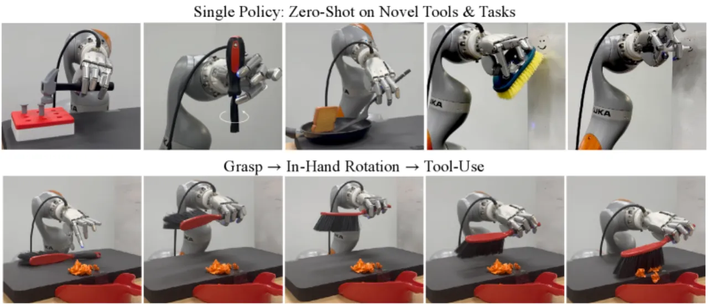
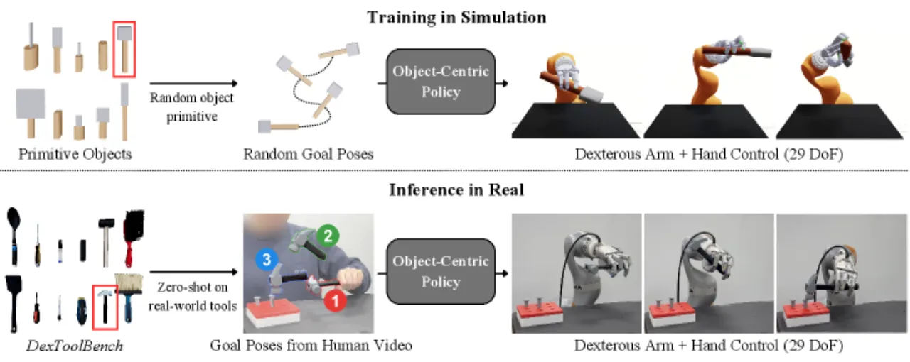
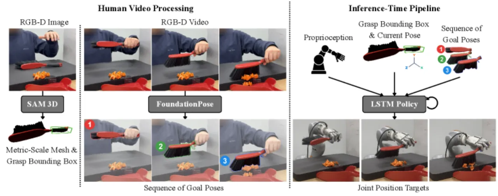
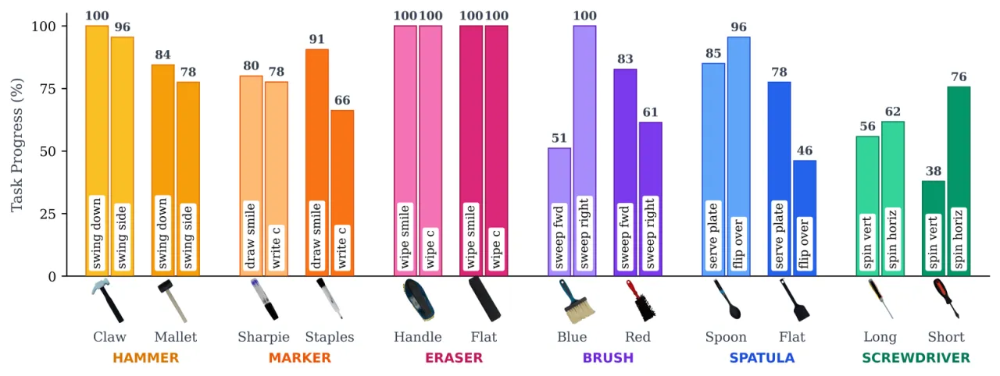
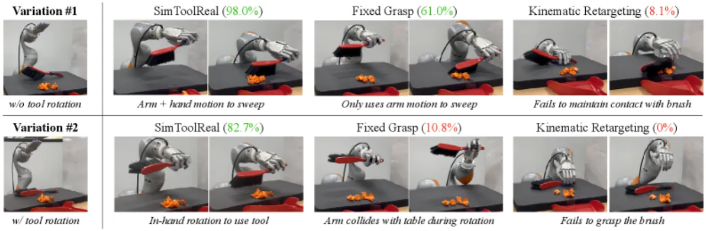
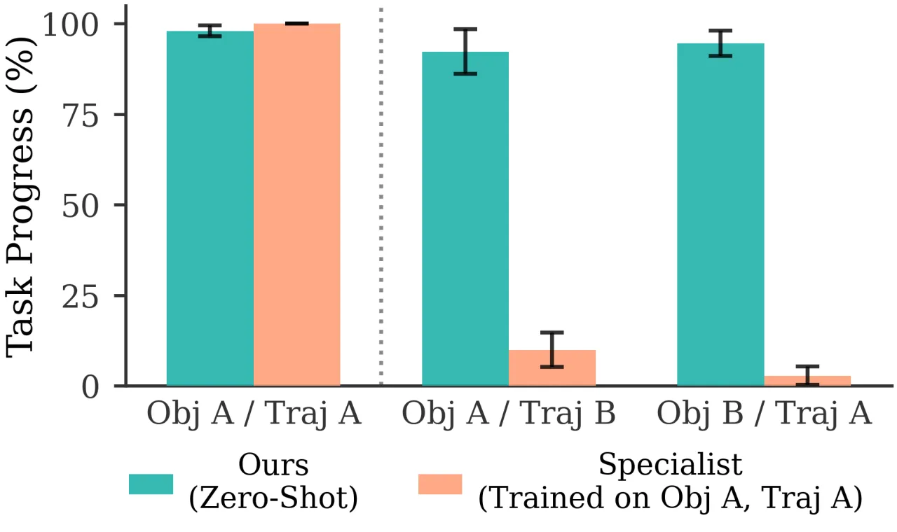
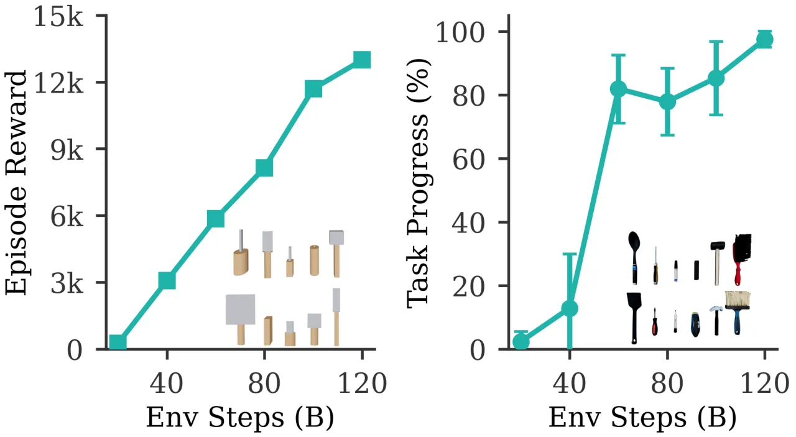

工具操控要求机器人同时做到：从平面上抓取细薄物体、在手内将其转向功能姿态、以及在施力交互中保持稳定抓持——这对并联夹爪而言几乎无解，对灵巧多指手而言也极具挑战。SimToolReal 的核心洞见是将工具使用抽象为将工具运动至任意目标位姿的 object-centric 问题，在仿真中训练一个单一的 goal-conditioned RL policy，再零样本部署至真实工具，无需任何特定工具或任务的额外训练。
工具是人类能力的放大器——锤子、刷子、画笔、螺丝刀……每件工具都显著扩展了机器人可执行任务的范围。但工具操控同时要求三项高难度技能并存：抓取薄而扁平的物体、手内旋转至功能构型、在施力过程中维持稳定抓持。遥操作数据采集对此极为困难，而现有的 sim-to-real RL 方案通常需要为每个物体和任务单独建模、单独调节 reward，工程量巨大且无法跨任务泛化。
"Instead of focusing on a single object and task, we procedurally generate a large variety of tool-like object primitives in simulation and train a single RL policy with the universal goal of manipulating each object to random goal poses. This approach enables SimToolReal to perform general dexterous tool manipulation at test-time without any object or task-specific training."

SimToolReal 将工具操控统一建模为 object-centric goal-reaching：给定当前物体 6D 位姿与目标位姿，策略输出关节角度目标，驱动机器人将物体从当前位姿运动至目标位姿。训练完全在仿真中对程序生成的 primitive objects 进行，推理阶段从人类示范视频中提取工具轨迹作为目标位姿序列，直接零样本部署。

策略定义为 π_θ(s_t, o_t, φ, g)，输出关节位置目标，其中：
Reward 设计为：r = r_smooth + r_grasp + I_grasped × r_goal，其中 r_goal = max(d* - d(o_t, g), 0) + B_succ × I[d(o_t, g) < ε]。这一设计使 reward 无需针对具体工具或任务进行调整，具有高度通用性。
仿真中的训练物体为大量程序生成的"handle + head"组合体，使用圆柱体与长方体搭建，变化维度包括尺寸、质量分布等。这些 primitive objects 无需与真实工具完全对齐，其多样性足以激发策略学习到在真实任务中所需的核心操控技能。
训练采用 SAPG（Scalable Actor-Prior Guided）优化器替代标准 PPO，其基于种群的探索机制对于灵巧操控所需的多模态动作空间探索至关重要。同时使用 Asymmetric Critic：Critic 访问仿真中的特权信息（如物体真实质量、接触力），Actor 仅使用可在真实世界获取的观测——这一设计显著提升了 value function 的估计精度而不依赖不可观测的状态。此外，策略采用 LSTM 主干网络以整合时序信息，并在训练中注入 domain randomization（观测延迟、动作延迟、力/力矩扰动等）。

论文同时提出 DexToolBench——一个针对灵巧工具操控的评测基准，包含：
每个任务配有 RGB-D 人类示范视频和数字孪生仿真环境。评测指标为 Task Progress：策略达到示范目标位姿的百分比，成功阈值 ε = 2 cm。
在 DexToolBench 上进行全面评测：120 次真实世界 rollouts（每个任务 5 次），覆盖 24 个任务、12 个物体实例、6 种工具类别。SimToolReal 与三类基线对比：Kinematic Retargeting（运动学重定向）、Fixed Grasp（固定抓取）以及 Specialist RL policies（每个类别单独训练的专家策略）。

| 方法 | 抓取能力 | 需旋转（Task Progress） | 无需旋转（Task Progress） |
|---|---|---|---|
| Kinematic Retargeting | ❌ 无法抓取 | 0% | 0% |
| Fixed Grasp | ✓ | 失败（碰撞） | 成功 |
| SimToolReal（ours） | ✓ | 成功（+37% vs 基线） | 成功 |
论文原文："SimToolReal outperforms prior retargeting and fixed-grasp methods by 37%"。Kinematic Retargeting 因忽略接触力而无法完成抓取；Fixed Grasp 在无需旋转的变体中可以成功，但一旦要求手内旋转，强制固定抓取会导致手臂与桌面碰撞。



论文在 5 个随机种子上进行 ablation，比较以下关键设计决策对训练 reward 的影响：
真实世界失败原因分布：
策略以 Task Progress（目标位姿到达率）为优化目标，而非任务功能的最终完成。对于需要精确施力（如钉钉子、拧螺丝到底）的场景，达到目标轨迹位姿不等同于任务成功。
"Conditioning on object pose goals alone is environment-blind, which can lead to collisions in cluttered scenes."——策略仅感知物体位姿与目标位姿，不感知周围障碍物，在复杂场景中可能发生碰撞。
物体表示依赖 6D 刚体位姿，无法处理几何形变（如弹性刷毛、软管等非刚体工具），从根本上限制了可泛化的工具范围。
目标位姿序列从人类示范视频中离线提取，推理阶段按固定顺序条件化执行，无法根据实时感知动态调整策略或跳过不可达目标。
真实世界失败中 43.7% 源于 FoundationPose 的姿态追踪丢失。策略的泛化上限在一定程度上受制于感知模块的鲁棒性，而非策略本身的控制能力。